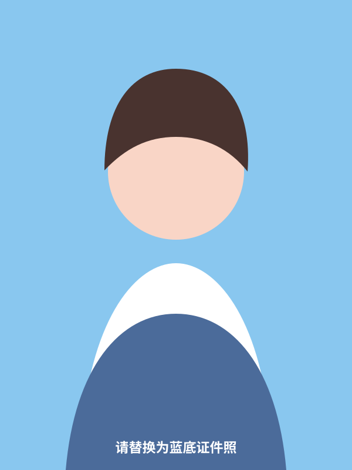

正在翻开作品…

CONTENT & VIDEO
正在加载技能…
02 / EXPERIENCE
每一步，都算数。
滚动鼠标或点击年份，沿着时间线翻看我的经历。
正在排开经历…
03 / WRITING
在开拍之前，先写一遍。
四种内容场景，四次从想法到表达的练习。
正在整理作品…
04 / VISUAL DIARY
光落下来的时候，我在看。
一册可以翻阅的影像笔记：图片、创作思路与视频留位都在这里。
正在装订影像笔记…
01 / 07
06 / RECEIPTS & LETTERS
把认真留下来，
也把下一次打开。
每一张票根，都是一次项目里真实发生过的投入。
正在归档荣誉…
TO THE NEXT COLLABORATOR
你好，我是李乔英。
期待加入一个愿意认真做内容的团队：一起从一个模糊的想法出发，拍成具体、动人又有效的作品。
加载联系信息中…
LQY / 2026
正在排版内容…